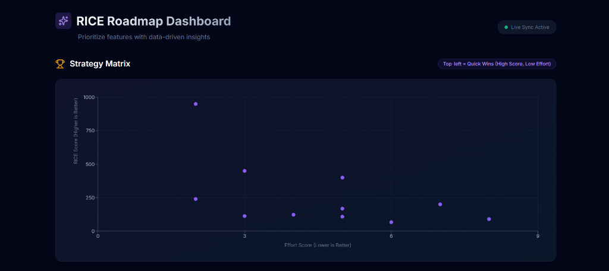

/01
About Me

Hi, I'm Sachin 👋
Business Analyst with 2 years of experience and a product-first approach to solving complex operational challenges.
I've owned end-to-end delivery of AI-powered dashboards, pricing engines, and automation tools that improved decision velocity, revenue outcomes, and forecasting accuracy.
Skilled in requirements discovery, workflow design, prototyping, and KPI ownership. I thrive at the intersection of business strategy and technical execution — building products from 0→1 with cross-functional teams.